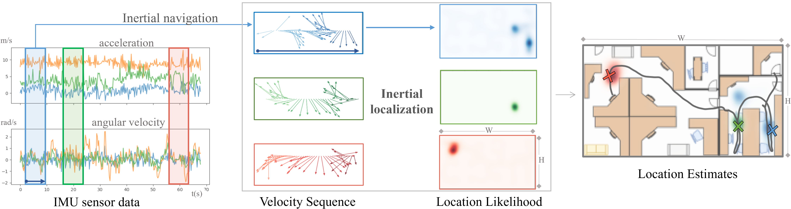
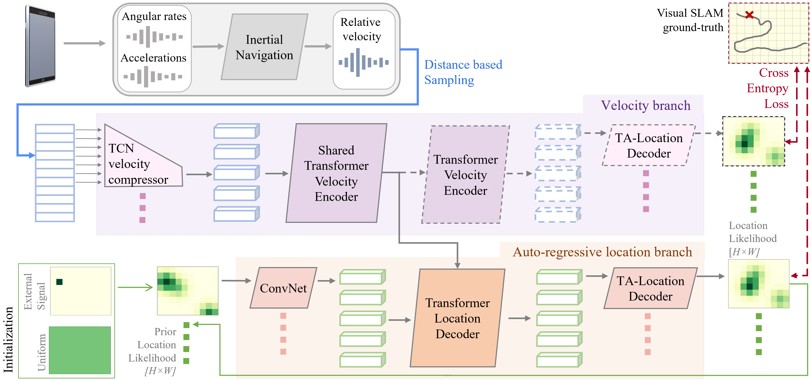

This paper proposes the inertial localization problem, the task of estimating the absolute location from a sequence of inertial sensor measurements. This is an exciting and unexplored area of indoor localization research, where we present a rich dataset with 53 hours of inertial sensor data and the associated ground truth locations. We developed a solution, dubbed neural inertial localization NILoc which 1) uses a neural inertial navigation technique to turn inertial sensor history to a sequence of velocity vectors; then 2) employs a transformer-based neural architecture to find the device location from the sequence of velocities. We only use an IMU sensor, which is energy efficient and privacy preserving compared to WiFi, cameras, and other data sources. Our approach is significantly faster and achieves competitive results even compared with state-of-the-art methods that require a floorplan and run 20 to 30 times slower. We share our code, model and data.
NILoc inertial localization dataset contains 53 hours of motion/trajectory data from two university buildings and one office space. Each scene spans a flat floor and we share IMU data and ground-truth locations based on Visual Inertial SLAM for each trajectory.
| Dataset | Environment | Full Dataset statistics | ||||
|---|---|---|---|---|---|---|
| Dimensions (m^2) |
resolution (pixels per meter) |
trajectories | subjects | duration (h) | length(km) | |
| University A | 62.8 x 84.4 | 2.5 | 151 | 52 | 25.57 | 65.35 |
| University B | 57.6 x 147.2 | 2.5 | 91 | 3 | 14.64 | 59.63 |
| Office C | 38.4 x 11.2 | 10 | 77 | 1 | 12.8 | 25.65 |
We use two branch transformer architecture to estimate location likelihood from IMU velocity input.

Check out our related projects on the topic of inertial navigation and localization!